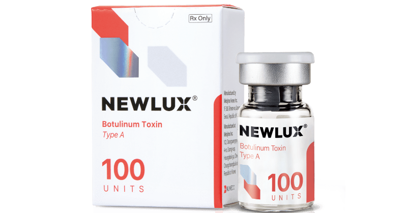
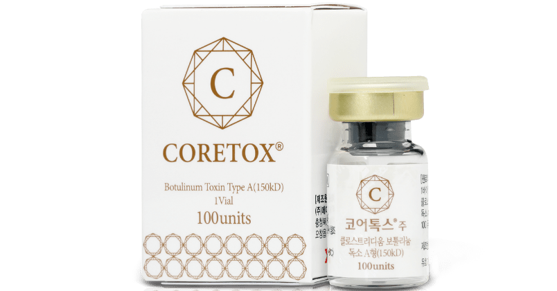
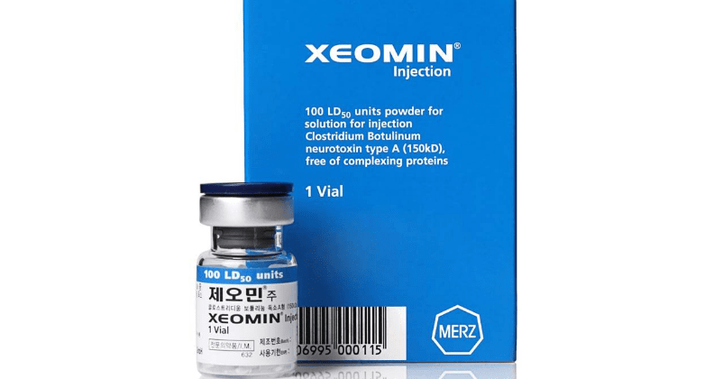

BOTOX
빛나는, 더 반짝일 수 있는
당신을 위한 보톡스를 소개합니다.
Scroll

빛나는, 더 반짝일 수 있는
당신을 위한 보톡스를 소개합니다.
Scroll

주름 보톡스는 표정을 지을 때 생기는 주름을 완화하는 시술로
이마/미간/콧등/눈가/자갈턱 등의 부위에 적용 가능합니다.
근육 보톡스는 턱/관자/승모근/종아리 등의 부위에 적용하여 크기를
감소시킬 수 있습니다.
스킨 보톡스는 피부 얕은 층에 주입하여 얼굴 전반의 탄력, 모공,
잔주름, 그리고 피지 분비량을 개선할 수 있는 시술입니다.

5~10분

2~12개월(개인차 있음)

6~12개월

없음
| 구분 | 뉴럭스 | 코어톡스 | 제오민 |
|---|---|---|---|
|
제품 |

|

|

|
|
특징 |
단백질 변성이 적은 차세대 보톡스 |
내성 적은 국산 프리미엄 보톡스 |
내성 적은 독일산 프리미엄 보톡스 |

말하거나 표정 지을 때
생기는 주름이 고민인 분
노화로 인해 깊어지는
주름이 신경 쓰이는 분
깊은 주름이 생기기 전에
미리 예방을 하고 싶은 분
시술은 아래와 같이 진행되며 상황에 따라 변경될 수 있습니다.

1:1 맞춤상담

냉각 또는 스프레이 마취
(일부부위 제외)

시술

관리방법 안내